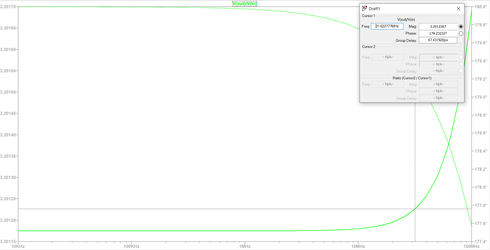
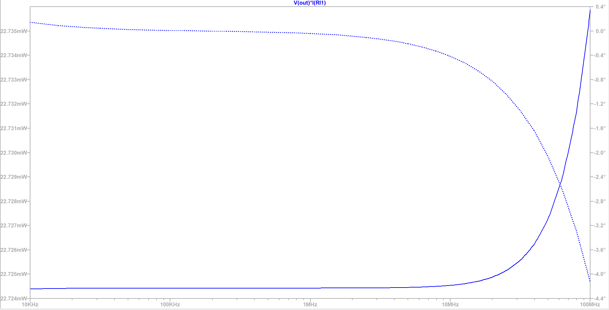

<!DOCTYPE html PUBLIC "-//W3C//DTD XHTML 1.0 Strict//EN" "http://www.w3.org/TR/xhtml1/DTD/xhtml1-strict.dtd"><html xmlns="http://www.w3.org/1999/xhtml" xml:lang="en" lang="en"><head><meta http-equiv="Content-Type" content="text/html;charset=iso-8859-1" /> <meta name="Language" content="English"/><title>Drive capability</title><link rel="stylesheet" href="css/slicap.css"><script type="text/x-mathjax-config">MathJax.Hub.Config({tex2jax: {inlineMath: [['$','$']]}});</script> <script type="text/x-mathjax-config">MathJax.Hub.Config({TeX: {equationNumbers: {autoNumber: "all"}}});</script><script src='https://cdnjs.cloudflare.com/ajax/libs/mathjax/2.7.5/latest.js?config=TeX-MML-AM_CHTML' async></script></head><body><div id="top"><h1>Drive capability</h1></div>
<p>The load $50 $ is to be driven with $1 mW$. This leads to a requirement in $V_{rms}=225 mV$ and $I_{rms}=4.7 mA$ respectively. Additionally we know that the input voltage, derived from the E-field at the antenna is $V_{in,rms}=225 mV$ leading to a voltage-to-voltage amplification of at least 1.</p>
<p>We assume all signals to be sinusoidal.</p>
<p>The current set of prameters leads to an amplification over the bandwidth of:</p>
<figure></figure>
<p>To test drive capability we measure the power delivered to the load when performing an AC analysis:</p>
<figure></figure>
<p>The stage can drive the load as required</p>
<div id="footnote"><p>Go to <a href="index.html"> main index</a></p><p>SLiCAP: Symbolic Linear Circuit Analysis Program, Version 0.6 &copy 2009-2020 Anton Montagne</p><p>For documentation, examples, support, updates and courses please visit: <a href="http://www.analog-electronics.eu">analog-electronics.eu</a></p></div></body></html>
